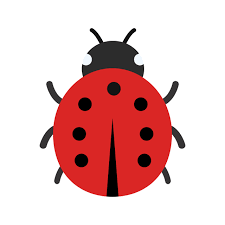

Introduction
I hope nobody is reading. But if you are, then keep this to yourself.
Your prod app should never have to fail, crash or display arcane red lines of errors on the UI.
If it has to, it should do so gracefully and with dignity. Only then will you have an easy time convincing the client that it’s a six-legged feature, not a bug.

When do errors arise?
Most, if not all, application errors occur when you’re trying to perform an operation on data. This can be during app startup or in response to user action.
Common cases are:
- Mathematical calculations eg.
+,-,*,/ - Data manipulations eg. subsetting (
iris[, "Sepal.Length"])
Defensive programming
Defensive programming is an approach to software development that focuses on anticipating and preventing potential errors, bugs, and vulnerabilities in the code.
The fundamental concept of this approach is to develop a program that can function correctly even in the presence of unforeseen circumstances or when users enter unexpected inputs.
We’ll focus on 2 key principles of defensive programming, both at the same time:
Validating inputs: Checking that all input values are within expected ranges or formats, and handling unexpected input values appropriately.
Handling errors: Catching and handling errors/exceptions in a way that allows the program to recover gracefully, without crashing or losing data
That’s where tryCatch comes in!
tryCatch()
The basic syntax of tryCatch() is this:
Hey R,
I have this block of code. I’m not sure if it’s flawless, but I need you to try and run it.
In case you encounter issues, here’s how you should proceed depending on the scenario:
- Did it throw an error? Then do <error handling>
- Did it give a warning? Then run this <warning handling chunk>
- Finally, regardless of whether it ran successfully or failed, please do <finally block>
Hands-On
Practical examples have been a great way for me to learn new concepts.
Be sure to go through the examples thoroughly and see if you can remake similar ones of your own.
Example 1: Generic errors & warnings
In case of an error or a warning during an operation, inform the user that something unexpected happened and show a glimpse of what might have went wrong.
library(shiny)
ui <- fluidPage(
shinytoastr::useToastr(),
tags$div(
class = "container",
align = "center",
selectInput(
inputId = "cols",
label = "Choose one or more columns",
choices = c(names(iris), "Unknown Column"),
multiple = TRUE
),
DT::DTOutput(outputId = "table")
)
)
server <- function(input, output, session) {
output$table <- DT::renderDT({
tryCatch(
expr = {
{ iris |> dplyr::select(dplyr::all_of(input$cols)) } * 100
},
error = \(e) {
shinytoastr::toastr_error(
title = "Error in calculation",
message = conditionMessage(e)
)
},
warning = \(w) {
shinytoastr::toastr_warning(
title = "Warning!",
message = conditionMessage(w)
)
}
)
})
}
shinyApp(ui, server)Example 2: Custom errors & warnings
Sometimes you can choose to be more informative and specific. In this example, we tell the user what exactly went wrong.
On top of that, we leave room for unforeseen causes of errors & warnings.
library(shiny)
ui <- fluidPage(
shinytoastr::useToastr(),
tags$div(
class = "container",
align = "center",
selectInput(
inputId = "cols",
label = "Choose one or more columns",
choices = c(names(iris), "Unknown Column"),
multiple = TRUE
),
DT::DTOutput(outputId = "table")
)
)
server <- function(input, output, session) {
output$table <- DT::renderDT({
cols <- input$cols
req(cols)
tryCatch(
expr = {
if ("Species" %in% cols) {
shinytoastr::toastr_warning(
title = "Omitting column 'Species'",
message = "Cannot perform multiplication on a factor"
)
cols <- setdiff(cols, "Species")
}
if ("Unknown Column" %in% cols) {
shinytoastr::toastr_error(
title = "Omitting 'Uknown Column'",
message = "Cannot subset columns which don't exist"
)
cols <- setdiff(cols, "Unknown Column")
}
{ iris |> dplyr::select(dplyr::all_of(cols)) } * 100
},
# in case of other unforeseen errors & warnings:
error = \(e) {
shinytoastr::toastr_error(
title = "Error in calculation",
message = conditionMessage(e)
)
},
warning = \(w) {
shinytoastr::toastr_warning(
title = "Warning!",
message = conditionMessage(w)
)
}
)
})
}
shinyApp(ui, server)